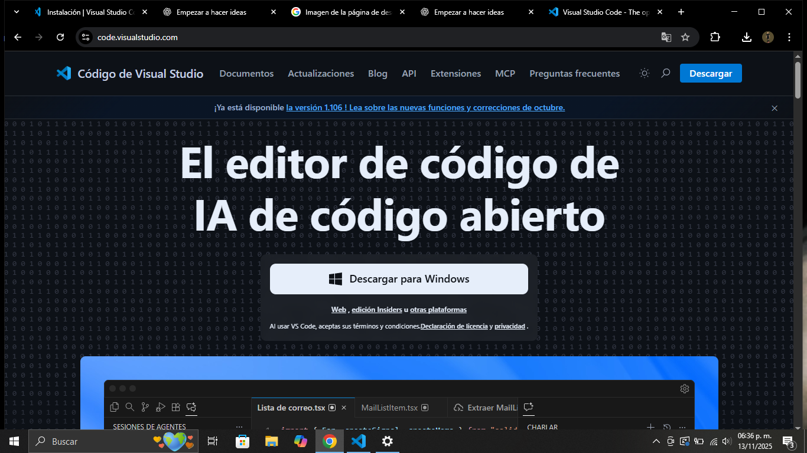
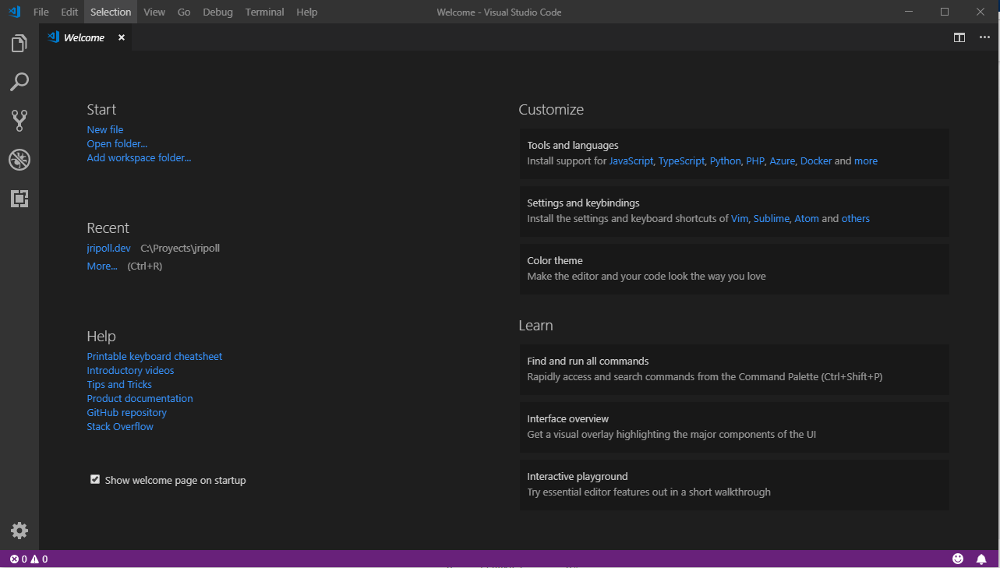
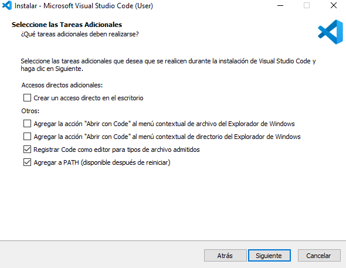
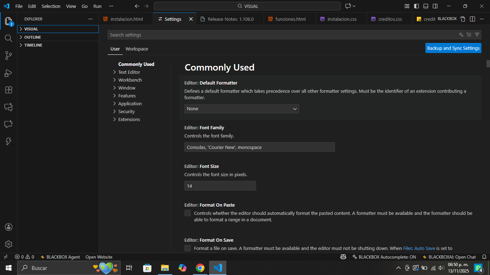

Cómo instalar

🖥️ Instalación GUI (Windows / macOS)
Descarga el instalador oficial y sigue el asistente paso a paso.

💻 Instalación por Terminal
Comandos rápidos usando winget, brew, apt o snap.

🚀 Primer inicio y configuración
Temas, extensiones recomendadas y ajustes iniciales.

🔗 Agregar al PATH
Configurar el comando code para abrir VS Code desde la terminal.

🛠️ Problemas comunes
Permisos, PATH, extensiones que no cargan y soluciones rápidas.

💡 Consejos y optimizaciones
Instalación headless, integraciones con Docker y WSL, y más.